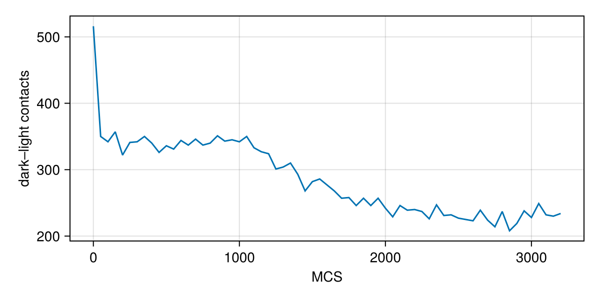
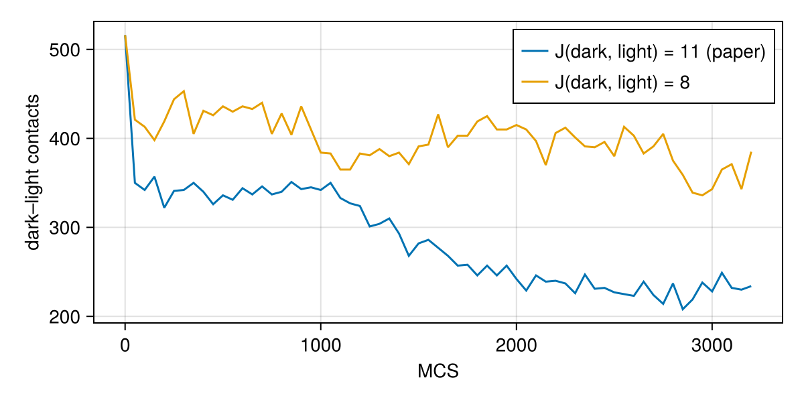

Your first cellular Potts model
This page builds a complete simulation of cell sorting from scratch. You will learn:
- what a cellular Potts model is, in a few paragraphs;
- how to write a model with
@potts_model; - how to build an initial state, a problem and a solution;
- how to plot the result and read cell quantities such as volumes;
- how to change a parameter without recompiling, and how to run an ensemble.
No knowledge of Julia or of SciML is assumed. If you have never used Julia, read the primer below first.
- Run code in the Julia REPL (type
juliain a terminal) or in a notebook. Packages are loaded withusing Potts. x = 1.0makes a variable.[1, 2, 3]is a vector,[1 2; 3 4]a 2×2 matrix (rows are separated by;). Indices start at 1:v[1]is the first element,v[end]the last.(60, 60)is a tuple.a => bis a pair.:darkis a symbol, a name used as a value.f(x; k = 2)callsfwith the keyword argumentk. Keywords come after;.- Functions with a
!at the end (solve!,step!) change their argument. - Macros start with
@(@potts_model,@named). They transform the code you write before it runs. - Unicode names such as
λ,V₀andkind′are ordinary names. In the REPL type\lambdathen Tab forλ,V\_0then Tab forV₀, andkind\primethen Tab forkind′. ?solvein the REPL shows the documentation ofsolve.
What is a cellular Potts model?
A cellular Potts model represents a tissue on a grid of sites (pixels in 2D, voxels in 3D). Every site belongs to exactly one cell, or to the medium (the space around the cells, cell number 0). A cell is the set of sites with its number, so cells have real shapes that change over time.
Each cell has a kind (also called a type), such as dark or light. A model assigns an energy $H$ to every configuration of the grid. A typical $H$ has two parts:
- a contact term: each pair of neighbouring sites that belong to different cells costs an energy $J$ that depends on the two kinds. Low $J$ means strong adhesion.
- an area (or volume) term $\lambda (V - V_0)^2$ that keeps every cell near its target size $V_0$.
The simulation repeatedly picks a random site and proposes to copy the cell of a random neighbouring site into it. The copy is accepted with the Metropolis rule: always if it lowers the energy, and with probability $e^{-\Delta H / T}$ if it raises it by $\Delta H$. The temperature $T$ sets how much the cell membranes fluctuate. One Monte Carlo step (MCS) is as many copy attempts as there are sites.
In Potts.jl you write $H$ and the copy rules as equations. Potts.jl derives the energy change of a copy ($\Delta H$) and generates the simulation code.
Step 1: load the packages
using Potts # the modelling language and the solvers
using PottsModels # published models and their initial states
using MakiePotts # plotting of Potts states
using CairoMakie # a Makie backend that draws figures and videos to filesStep 2: write the model
A model is a block of sections, each starting with @. This is the cell sorting model of Graner and Glazier (1992), with the parameters of the paper:
@potts_model CellSorting begin
@kinds medium dark light
@parameters begin
λ = 1.0
V₀ = 40.0
T = 10.0
J[kind, kind] = [0 16 16; 16 2 11; 16 11 14]
end
@lattice Lattice((72, 72); boundary = Periodic(), neighborhood = Moore(1))
@relations proposal = Moore(1)
@energy begin
cells(dark, light) => λ * (volume - V₀)^2
contacts => J[kind, kind′]
end
@sweep Metropolis(; temperature = T)
endCellSorting (generic function with 1 method)Line by line:
@kinds medium dark lightdeclares the cell kinds. The first kind is always the medium.@parametersdeclares the numbers of the model with their default values: the strengthλand targetV₀of the area constraint, the temperatureT, and the contact energies.J[kind, kind]is a table indexed by two kinds, in the order of@kinds: row 2, column 3 is the dark–light energy (11). Dark–dark contacts (2) are the cheapest, so dark cells stick together most; contacts with the medium (16) are the most expensive.@latticedeclares a 72×72 grid.Periodic()wraps the edges around.Moore(1)makes the 8 surrounding sites the neighbours of a site.@relations proposal = Moore(1)lets a copy come from any of these 8 neighbours, as in the paper (the default is the 4 nearest).@energylists the terms of $H$, each asdomain => expression:cells(dark, light) => λ * (volume - V₀)^2sums over every dark and light cell;volumeis the number of sites of the cell.contacts => J[kind, kind′]sums over every pair of neighbouring sites owned by different cells;kindandkind′are the kinds on the two sides.
@sweep Metropolis(; temperature = T)sets the acceptance rule.
@potts_model defines a constructor function, CellSorting. Calling it makes the model object. @named gives the model a name (here sorting):
@named sorting = CellSorting()PottsSystem sorting on 72×72 (2D)
kinds: medium, dark, light
parameters: λ, V₀, T, J
energy cells(1, 2) => ((-V₀ + volume)^2)*λ
energy contacts => Potts.at2(J, kind, kind′)
sweep: metropolis(temperature = T)Keywords change the defaults: CellSorting(; name = :hot, T = 20.0) is the same model with a higher temperature.
PottsModels contains this model as GranerGlazier, with its documentation and a paper page that follows the paper. Writing it out here shows how a model is built; @named sorting = GranerGlazier() gives the same model.
Step 3: the initial state
The initial state says which cell owns each site and what kind each cell is. The paper starts from a round aggregate of 64 cells, each dark or light at random. graner_glazier_state() returns it as two arrays:
σ0, kinds0 = graner_glazier_state()
size(σ0), length(kinds0)((72, 72), 64)σ0 is the 72×72 matrix of cell numbers (0 for the medium), and kinds0 the kind of each cell (1 = dark, 2 = light, in the order of @kinds after the medium). The pairs ownership => σ0 and kind => kinds0 form the operating point, as in ModelingToolkit. You can also build initial states from simple pieces with layouts; the layouts tutorial shows how.
Step 4: build the problem
A PottsProblem combines the model, the initial state and the time span (in MCS):
prob = PottsProblem(sorting, [ownership => σ0, kind => kinds0], (0, 3200); seed = 1)Building the problem compiles the model, so the first problem of a fresh session takes about a minute; later problems of the same session take seconds. seed fixes the random numbers: the same seed gives the same run.
One of our MCS is one copy attempt per site. Graner and Glazier count 16 attempts per site as one MCS, so 3200 of our MCS are 200 of the paper's. The paper follows the sorting to 10⁴ of its MCS; here we stop early to keep the page fast.
Step 5: solve
sol = solve(prob, SequentialCPM(); saveat = 50)PottsSolution: retcode Success, 65 saved states, 3200 MCS
t: [0, 50, 100, 150, 200, …, 3000, 3050, 3100, 3150, 3200]SequentialCPM() is the standard algorithm: one copy attempt after another, as in the original model. saveat = 50 saves the state every 50 MCS (the first and last states are always saved). sol.t holds the saved times and sol.u the saved states:
sol.t[1:5]5-element Vector{Int64}:
0
50
100
150
200Step 6: watch the run
record_potts turns the saved states into a video, one frame per saved state:
record_potts("getting_started_sorting.mp4", sol; framerate = 12, title = "", figure = (; size = (420, 420)))The dark cells (blue) gather into a growing cluster and the light cells (green) cover them. For a single picture, renderframe turns one saved state into a frame and pottsplot draws it: pottsplot(renderframe(sol.u[end])).
Our run stops at 200 of the paper's MCS. This is the same model run as long as in the paper (10⁴ of its MCS), made offline:
Step 7: read cell quantities
Every quantity of the model can be read from the solution by name, as with ModelingToolkit's symbolic indexing. sol[:volume] gives, for each saved time, the volume of every cell:
volumes = sol[:volume]
volumes[end][1:8] # the volumes of cells 1 to 8 at the last saved time8-element Vector{Float64}:
37.0
37.0
37.0
37.0
37.0
38.0
35.0
40.0The kinds work the same way:
kinds = sol[:kind][end]
kinds[1:8] # 1 = dark, 2 = light8-element Vector{Int32}:
1
1
2
2
2
2
2
1The results are ordinary Julia arrays, so any Julia code can analyse them. For example, the mean volume of the dark cells at the last saved time:
using Statistics: mean
mean(volumes[end][kinds .== 1])38.666666666666664A saved state also holds the raw arrays: u.σ is the matrix of cell numbers and u.cell the per-cell arrays. This function counts the dark–light contacts between neighbouring sites, a measure of how mixed the aggregate is:
function mixed_contacts(u)
σ, k = u.σ, u.cell.kind
n = 0
for x in CartesianIndices(σ), step in ((1, 0), (0, 1))
y = CartesianIndex(mod1.(Tuple(x) .+ step, size(σ))) # neighbour, wrapping around
a, b = σ[x], σ[y]
n += (a != 0 && b != 0 && k[a] != k[b])
end
return n
end
mixed = mixed_contacts.(sol.u)
fig = Figure(size = (600, 300))
ax = Axis(fig[1, 1]; xlabel = "MCS", ylabel = "dark–light contacts")
lines!(ax, sol.t, mixed; label = "J(dark, light) = 11 (paper)")
fig
The count falls as the cells sort. total_energy computes $H$ of any state; it falls too:
total_energy(prob, sol.u[1]), total_energy(prob, sol.u[end])(31321.0, 26846.0)Step 8: change a parameter
remake changes parameters without recompiling. Here we change one entry of the paper's table: the dark–light energy goes from 11 to 8, the mean of the dark–dark (2) and light–light (14) energies. Then a dark–light boundary costs no more than like boundaries, and the sorting is much weaker (the kinds' different energies against the medium still pull some light cells outwards):
J_neutral = [0 16 16; 16 2 8; 16 8 14] # paper: J(dark, light) = 11; here: 8
prob_neutral = remake(prob; p = [:J => J_neutral])
sol_neutral = solve(prob_neutral, SequentialCPM(); saveat = 50)
lines!(ax, sol_neutral.t, mixed_contacts.(sol_neutral.u); label = "J(dark, light) = 8")
axislegend(ax; position = :rt)
fig
Step 9: an ensemble
A cellular Potts model is random, so one run is one sample. An EnsembleProblem runs many replicates with independent random streams. output_func keeps only what you need from each run, here the number of mixed contacts at the end:
ensemble = EnsembleProblem(prob; output_func = (sol, i) -> (mixed_contacts(sol.u[end]), false))
results = solve(ensemble, SequentialCPM(); trajectories = 4)
results.u4-element Vector{Int64}:
161
252
190
167The runs use all the threads Julia was started with (julia --threads=auto). Replicate i is reproducible on its own: it equals solve(remake(prob; replica = i), SequentialCPM()).
What you learned
- A model is a
@potts_modelblock: kinds, parameters, a lattice, energy terms and a sweep. PottsProblemcompiles the model with an initial state;solveruns it.record_pottsmakes a video;sol[:name]reads any model quantity;sol.uholds the saved states.remakechanges parameters cheaply;EnsembleProblemruns replicates.
Next, the first tutorial looks at the energy in more detail.